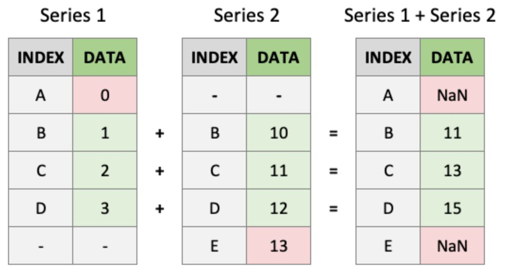
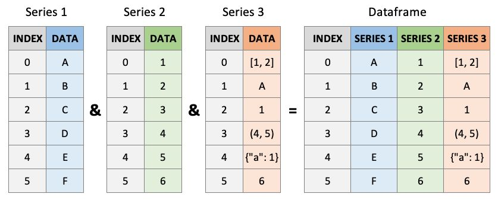

HWRS 564a · Week 5 · Tuesday, September 22
Week 5, session 1 of 2
.loc and .ilocDatetimeIndexToday’s question: how do we get from a CSV to a defensible monthly hydrologic record?
Insert a column at position 2 and every later index changes. The code still runs; the meaning silently moves.
Labels survive reordering. If a required label disappears, pandas raises a KeyError at the point where the assumption failed.

Pandas matches B with B, not the second row with the second row. Unmatched labels remain in the result and become NaN instead of silently shifting the data.
One column name returns a Series. A list of names returns a DataFrame.

The shared index is what makes the rows cohere. Column names distinguish the three measurements; row labels identify the observation each value belongs to.
from pathlib import Path
import pandas as pd
ROOT = next(
p for p in [Path.cwd(), *Path.cwd().parents]
if (p / "pyproject.toml").exists()
)
wells = pd.read_csv(
ROOT / "data" / "tucson_basin_wells.csv",
dtype={"site_no": str},
)site_no is an identifier, not a number. Reading it as text preserves leading zeros and makes later joins reliable.
print(wells.shape) # did the expected table arrive?
print(wells.dtypes) # are identifiers and numbers typed correctly?
print(wells.isna().sum()) # where is information missing?
print(wells.describe()) # are ranges physically plausible?These checks take seconds. They are part of the analysis, not decoration before the analysis begins.
Add land-surface elevation in metres and find the mean well depth.
Hint
Assigning to a new column name creates it. Series arithmetic is elementwise.
.loc uses labels; .iloc uses positions.loc slices include the endpoint. .iloc slices follow ordinary Python and exclude it.
Get the third row by position and well C-22 by name.
Hint
“Third” is a position. C-22 is a label.
Text dates can sort incorrectly, cannot be subtracted, and do not know their month or water year.
flow = pd.read_csv("flow.csv", parse_dates=["datetime"])
flow = flow.set_index("datetime").sort_index()A DatetimeIndex turns time into a selectable and groupable coordinate.
The final slice includes all of July through September. The inclusive .loc rule is useful here.
If dates stay in a column, use .dt: levels["date"].dt.month.
Pull July through September 2006 from a daily series.
Hint
Use a slice containing two partial date strings.
flow["discharge_cfs"].resample("ME").mean()
flow["discharge_cfs"].resample("YE").max()
flow["discharge_cfs"].resample("YE-SEP").mean()| Question | Aggregation |
|---|---|
| Average conditions | .mean() |
| Accumulated depth or volume | .sum() |
| Flood magnitude | .max() |
| Typical value resistant to peaks | .median() |
The code is easy. Choosing the aggregation is the hydrology.
Do not let a three-month stub become the “driest year” in your analysis.
Hint
Calendar years end in December; western-US water years end in September.
What you can now do
Before Thursday
labs/week05/week05_lab_pandas.ipynbThursday
Filtering, grouping, rolling windows, and reshaping one table for a different job.
HWRS 564a · Fall 2026